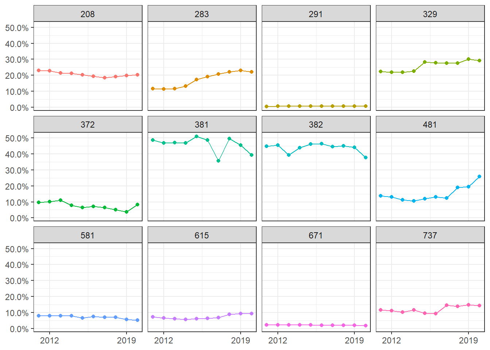

In this session we perform a simple extraction of XBRL line items and calculate some accounting ratios.
Throughout this script we will use custom functions. All the script specific functions are stored in this folder: 1_code/00_functions/f-xbrl_analyze.R (As a reference I also put the important functions in the script)
library(tidyverse); library(lubridate); library(furrr);library(openxlsx);
library(janitor)
source("1_code/00_functions/f-all.R")
source("1_code/00_download_data.R")
source("1_code/00_functions/f-xbrl_analyze.R")
.workers <- min(availableCores() / 2, 16)lst_paths <- list(
dir_main = "2_output/04_xbrl_analyze/",
path_xbrl_input = "2_output/03_xbrl_data/xbrl_elements1.rds",
path_orbis = "0_data/orbis_f500_bs_items.xlsx",
dir_cache = "2_output/04_xbrl_analyze/cache/cache_"
) %>% create_dirs()tab_orbis <- read.xlsx(lst_paths$path_orbis, 2) %>%
clean_names() %>%
select(-x1, -country, -country_iso_code) %>%
rename(company = company_name_latin_alphabet, symbol = ticker_symbol,
sic_code = us_sic_core_code_3_digits, sic_name = us_sic_core_code_description) %>%
pivot_longer(!matches("company|symbol|sic_code|sic_name")) %>%
mutate(
value = suppressWarnings(as.numeric(value)) * 1000,
name = gsub("_th_usd", "", name)
) %>%
separate(name, c("line_item", "year"), convert = TRUE, sep = "_(?=\\d{4})") %>%
pivot_wider(names_from = line_item)
tab_xbrl <- read_rds(lst_paths$path_xbrl_input) %>%
left_join(distinct(tab_orbis, symbol, company, sic_code, sic_name), by = "symbol")
tab_bs <- tab_xbrl %>%
filter(desc == "Balance Sheet", is.na(add)) %>%
select(symbol, company, sic_code, sic_name, value)In this analysis we will focus on the 2 balance sheet items Goodwill and Total Assets to calulate a simple ration of the percentage of Goodwill in the Balance Sheet.
We use a custom function: xbrl_extract_line_items() extract the relevant items (click on arrow to show).
xbrl_extract_line_items <- function(.tab, .tags) {
tab_ <- dplyr::filter(.tab, tag %in% .tags)
if (nrow(tab_) == 0 | !"amount" %in% colnames(.tab)) {
return(tibble::tibble(.rows = 0))
}
tab_ %>%
dplyr::filter(tag %in% .tags) %>%
dplyr::mutate(
year = lubridate::year(endDate),
amount = as.numeric(amount)
) %>%
dplyr::group_by(year, tag) %>%
dplyr::filter(amount == max(amount)) %>%
dplyr::ungroup() %>%
dplyr::distinct(tag, year, amount) %>%
dplyr::mutate(tag = tolower(stringi::stri_replace_first_regex(tag, ".+?_", ""))) %>%
tidyr::pivot_wider(names_from = tag, values_from = amount, values_fill = 0)
}tags <- c("us-gaap_Goodwill", "us-gaap_Assets")
plan("multisession", workers = .workers)
tab_gw <- tab_bs %>%
mutate(
value = future_map(
.x = value,
.f = ~ xbrl_extract_line_items(.x, tags),
.options = furrr_options(seed = TRUE)
)
) %>%
unnest(value) %>%
distinct(symbol, year, .keep_all = TRUE) %>%
mutate(goodwill = if_else(is.na(goodwill), 0, goodwill)) %>%
filter(assets > 0) %>%
group_by(symbol) %>%
filter(all(2011:2020 %in% year)) %>%
ungroup() %>%
filter(between(year, 2011, 2020))
plan("default")Next we perform a simple analysis on SIC code level to show the differences in Goodwill across industries
tab_gw_sic <- tab_gw %>%
filter(!is.na(sic_name)) %>%
group_by(sic_code, sic_name, year) %>%
summarise(across(where(is.numeric), ~ sum(., na.rm = TRUE)), .groups = "drop_last") %>%
mutate(goodwill_to_asset = goodwill / assets) %>%
filter(mean(goodwill_to_asset) > 0) %>%
ungroup()tab_gw_sic %>%
ggplot(aes(year, goodwill_to_asset, color = sic_code)) +
geom_line() +
geom_point() +
scale_x_continuous(breaks = c(2012, 2019)) +
scale_y_continuous(labels = scales::percent) +
facet_wrap(~ sic_code) +
labs(x = NULL, y = NULL) +
theme_bw() +
theme(legend.position = "none")
| sic_code | sic_name |
|---|---|
| 208 | Beverages |
| 283 | Drugs |
| 291 | Petroleum refining |
| 329 | Abrasive, asbestos and miscellaneous nonmettalic mineral products |
| 372 | Aircraft and parts |
| 381 | Search, detection, navigation, guidance, aeronautical and nautical systems and instruments |
| 382 | Laboratory apparatus and analytical, optical, measuring, and controlling instruments |
| 481 | Telephone communications |
| 581 | Eating and drinking places |
| 615 | Business credit institutions |
| 671 | Holding offices |
| 737 | Computer programming, data processing, and other computer related services |
lsf.str()## calculate_formula : function (.tab)
## calculate_wb_fn : function (.dir, .name)
## compare_word_frequqncies : function (.tab, .tab_data)
## create_dirs : function (.dirs)
## display_top_n_by : function (.tab, .col)
## downlad_ar : function (.url, .dir)
## download_edgar_files : function (.tab, .dir, .retry = 5, .sleep = 1)
## download_google_drive : function (.id, .dir = NULL, .read_fun = NULL, .overwrite = FALSE)
## get_company_table : function (.url)
## get_f500 : function ()
## get_infos : function (.path)
## get_lm_stop : function ()
## get_ngrams : function (.path, .ngram, .stop = tibble(word = "", .rows = 0), .rm_num = TRUE)
## get_stand_statement : function (.paths, .path_map1, .path_map2)
## list_files_tab : function (dirs, reg = "*", id = "doc_id", rec = FALSE, info = FALSE)
## map_company_filings : function (.tickers, .ownership = FALSE, .type = "", .before = "", .count = 100, .page = 1,
## .progress = TRUE, .sleep = 0, .retry = 5)
## map_filing_details : function (.id, .hrefs, .progress = TRUE, .sleep = 0, .retry = 5)
## own_get_fs : function (.path, .dir_cache)
## own_XBRL : function ()
## own_xbrlDoAll : function (file.inst, cache.dir = "xbrl.Cache", prefix.out = NULL, verbose = FALSE, delete.cached.inst = TRUE)
## pdf_read_and_tokenize : function (.path, .dir)
## prep_top_n_by : function (.tab_word, .tab_data, .col, .n = 10)
## remove_html_tags : function (.string, rm_linebreaks = TRUE)
## safe_get_company_table : function (...)
## sec_read_and_tokenize : function (.path, .dir = NULL)
## show_sentiment : function (.tab, .type = c("pos/neg", "uncertainty", "litigious", "constraining", "superfluous"))
## show_table : function (.tab, .n = Inf)
## standardize_name : function (.name)
## write_to_excel : function (.tab, .name, .dir, .template)
## xbrl_extract_elements : function (.zip, .dir_tmp, .dir_out)
## xbrl_extract_line_items : function (.tab, .tags)
## xbrl_process_elements : function (.inst)sessioninfo::session_info()## - Session info ---------------------------------------------------------------------------------
## setting value
## version R version 4.0.3 (2020-10-10)
## os Windows 10 x64
## system x86_64, mingw32
## ui RStudio
## language (EN)
## collate English_Germany.1252
## ctype English_Germany.1252
## tz Europe/Berlin
## date 2021-04-21
##
## - Packages -------------------------------------------------------------------------------------
## ! package * version date lib source
## P assertthat 0.2.1 2019-03-21 [?] CRAN (R 4.0.0)
## P backports 1.2.1 2020-12-09 [?] CRAN (R 4.0.3)
## P broom 0.7.6 2021-04-05 [?] CRAN (R 4.0.3)
## P bslib 0.2.4 2021-01-25 [?] CRAN (R 4.0.4)
## P cachem 1.0.4 2021-02-13 [?] CRAN (R 4.0.4)
## P cellranger 1.1.0 2016-07-27 [?] CRAN (R 4.0.0)
## P cli 2.4.0 2021-04-05 [?] CRAN (R 4.0.3)
## P codetools 0.2-16 2018-12-24 [?] CRAN (R 4.0.3)
## P colorspace 2.0-0 2020-11-11 [?] CRAN (R 4.0.3)
## P crayon 1.4.1 2021-02-08 [?] CRAN (R 4.0.4)
## P curl 4.3 2019-12-02 [?] CRAN (R 4.0.0)
## P data.table 1.14.0 2021-02-21 [?] CRAN (R 4.0.4)
## P DBI 1.1.1 2021-01-15 [?] CRAN (R 4.0.3)
## P dbplyr 2.1.1 2021-04-06 [?] CRAN (R 4.0.3)
## P digest 0.6.27 2020-10-24 [?] CRAN (R 4.0.3)
## P dplyr * 1.0.5 2021-03-05 [?] CRAN (R 4.0.4)
## P edgarWebR * 1.0.3 2020-09-28 [?] CRAN (R 4.0.5)
## P ellipsis 0.3.1 2020-05-15 [?] CRAN (R 4.0.0)
## P evaluate 0.14 2019-05-28 [?] CRAN (R 4.0.0)
## P fansi 0.4.2 2021-01-15 [?] CRAN (R 4.0.3)
## P farver 2.1.0 2021-02-28 [?] CRAN (R 4.0.4)
## P fastmap 1.1.0 2021-01-25 [?] CRAN (R 4.0.4)
## P forcats * 0.5.1 2021-01-27 [?] CRAN (R 4.0.4)
## P fs 1.5.0 2020-07-31 [?] CRAN (R 4.0.2)
## P fst * 0.9.4 2020-08-27 [?] CRAN (R 4.0.2)
## P furrr * 0.2.2 2021-01-29 [?] CRAN (R 4.0.4)
## P future * 1.21.0 2020-12-10 [?] CRAN (R 4.0.3)
## P fuzzyjoin * 0.1.6 2020-05-15 [?] CRAN (R 4.0.2)
## P generics 0.1.0 2020-10-31 [?] CRAN (R 4.0.3)
## P ggplot2 * 3.3.3 2020-12-30 [?] CRAN (R 4.0.3)
## P globals 0.14.0 2020-11-22 [?] CRAN (R 4.0.3)
## P glue 1.4.2 2020-08-27 [?] CRAN (R 4.0.2)
## P gtable 0.3.0 2019-03-25 [?] CRAN (R 4.0.0)
## P haven 2.3.1 2020-06-01 [?] CRAN (R 4.0.0)
## P here * 1.0.1 2020-12-13 [?] CRAN (R 4.0.3)
## P highr 0.8 2019-03-20 [?] CRAN (R 4.0.0)
## P hms 1.0.0 2021-01-13 [?] CRAN (R 4.0.3)
## P htmltools 0.5.1.1 2021-01-22 [?] CRAN (R 4.0.4)
## P httpuv 1.5.5 2021-01-13 [?] CRAN (R 4.0.3)
## P httr 1.4.2 2020-07-20 [?] CRAN (R 4.0.2)
## P ISOcodes * 2021.02.24 2021-02-24 [?] CRAN (R 4.0.4)
## P janeaustenr 0.1.5 2017-06-10 [?] CRAN (R 4.0.0)
## P janitor * 2.1.0 2021-01-05 [?] CRAN (R 4.0.3)
## P jquerylib 0.1.3 2020-12-17 [?] CRAN (R 4.0.4)
## P jsonlite 1.7.2 2020-12-09 [?] CRAN (R 4.0.3)
## P kableExtra * 1.3.4 2021-02-20 [?] CRAN (R 4.0.4)
## P knitr 1.31 2021-01-27 [?] CRAN (R 4.0.4)
## P koRpus * 0.13-5 2021-02-02 [?] CRAN (R 4.0.5)
## P koRpus.lang.en * 0.1-4 2020-10-24 [?] CRAN (R 4.0.5)
## P labeling 0.4.2 2020-10-20 [?] CRAN (R 4.0.3)
## P later 1.1.0.1 2020-06-05 [?] CRAN (R 4.0.0)
## P lattice 0.20-41 2020-04-02 [?] CRAN (R 4.0.3)
## P lifecycle 1.0.0 2021-02-15 [?] CRAN (R 4.0.4)
## P listenv 0.8.0 2019-12-05 [?] CRAN (R 4.0.0)
## P lubridate * 1.7.10 2021-02-26 [?] CRAN (R 4.0.4)
## P magrittr 2.0.1 2020-11-17 [?] CRAN (R 4.0.3)
## P Matrix 1.2-18 2019-11-27 [?] CRAN (R 4.0.3)
## P mime 0.10 2021-02-13 [?] CRAN (R 4.0.4)
## P modelr 0.1.8 2020-05-19 [?] CRAN (R 4.0.0)
## P modeltools 0.2-23 2020-03-05 [?] CRAN (R 4.0.3)
## P munsell 0.5.0 2018-06-12 [?] CRAN (R 4.0.0)
## P NLP 0.2-1 2020-10-14 [?] CRAN (R 4.0.3)
## P openxlsx * 4.2.3 2020-10-27 [?] CRAN (R 4.0.3)
## P parallelly 1.24.0 2021-03-14 [?] CRAN (R 4.0.4)
## P patchwork * 1.1.1 2020-12-17 [?] CRAN (R 4.0.3)
## P pillar 1.5.1 2021-03-05 [?] CRAN (R 4.0.4)
## P pkgconfig 2.0.3 2019-09-22 [?] CRAN (R 4.0.0)
## P plyr 1.8.6 2020-03-03 [?] CRAN (R 4.0.0)
## P prettyunits 1.1.1 2020-01-24 [?] CRAN (R 4.0.0)
## P progress 1.2.2 2019-05-16 [?] CRAN (R 4.0.0)
## P promises 1.2.0.1 2021-02-11 [?] CRAN (R 4.0.4)
## P purrr * 0.3.4 2020-04-17 [?] CRAN (R 4.0.0)
## P R6 2.5.0 2020-10-28 [?] CRAN (R 4.0.3)
## P rappdirs 0.3.3 2021-01-31 [?] CRAN (R 4.0.4)
## P Rcpp 1.0.6 2021-01-15 [?] CRAN (R 4.0.3)
## P readr * 1.4.0 2020-10-05 [?] CRAN (R 4.0.3)
## P readtext * 0.80 2020-09-22 [?] CRAN (R 4.0.2)
## P readxl 1.3.1 2019-03-13 [?] CRAN (R 4.0.0)
## renv 0.13.1 2021-03-18 [1] CRAN (R 4.0.3)
## P reprex 2.0.0 2021-04-02 [?] CRAN (R 4.0.5)
## P reshape2 1.4.4 2020-04-09 [?] CRAN (R 4.0.0)
## P rlang 0.4.10 2020-12-30 [?] CRAN (R 4.0.3)
## P rmarkdown 2.7 2021-02-19 [?] CRAN (R 4.0.4)
## P rprojroot 2.0.2 2020-11-15 [?] CRAN (R 4.0.3)
## P rstudioapi 0.13 2020-11-12 [?] CRAN (R 4.0.3)
## P rvest * 1.0.0 2021-03-09 [?] CRAN (R 4.0.4)
## P sass 0.3.1 2021-01-24 [?] CRAN (R 4.0.4)
## P scales * 1.1.1 2020-05-11 [?] CRAN (R 4.0.0)
## P sessioninfo 1.1.1 2018-11-05 [?] CRAN (R 4.0.0)
## P shiny * 1.6.0 2021-01-25 [?] CRAN (R 4.0.4)
## P shinyWidgets * 0.6.0 2021-03-15 [?] CRAN (R 4.0.4)
## P slam 0.1-48 2020-12-03 [?] CRAN (R 4.0.3)
## P snakecase 0.11.0 2019-05-25 [?] CRAN (R 4.0.0)
## P SnowballC 0.7.0 2020-04-01 [?] CRAN (R 4.0.0)
## P stringdist * 0.9.6.3 2020-10-09 [?] CRAN (R 4.0.3)
## P stringi * 1.5.3 2020-09-09 [?] CRAN (R 4.0.2)
## P stringr * 1.4.0 2019-02-10 [?] CRAN (R 4.0.2)
## P svglite 2.0.0 2021-02-20 [?] CRAN (R 4.0.4)
## P sylly * 0.1-6 2020-09-20 [?] CRAN (R 4.0.5)
## P sylly.en 0.1-3 2018-03-19 [?] CRAN (R 4.0.5)
## P systemfonts 1.0.1 2021-02-09 [?] CRAN (R 4.0.4)
## P textdata 0.4.1 2020-05-04 [?] CRAN (R 4.0.5)
## P textstem * 0.1.4 2018-04-09 [?] CRAN (R 4.0.5)
## P tibble * 3.1.0 2021-02-25 [?] CRAN (R 4.0.4)
## P tidyr * 1.1.3 2021-03-03 [?] CRAN (R 4.0.4)
## P tidyselect 1.1.0 2020-05-11 [?] CRAN (R 4.0.0)
## P tidytext * 0.3.0 2021-01-06 [?] CRAN (R 4.0.3)
## P tidyverse * 1.3.0 2019-11-21 [?] CRAN (R 4.0.0)
## P tm 0.7-8 2020-11-18 [?] CRAN (R 4.0.3)
## P tokenizers 0.2.1 2018-03-29 [?] CRAN (R 4.0.0)
## P topicmodels * 0.2-12 2021-01-29 [?] CRAN (R 4.0.5)
## P utf8 1.2.1 2021-03-12 [?] CRAN (R 4.0.3)
## P vctrs 0.3.7 2021-03-29 [?] CRAN (R 4.0.5)
## P viridisLite 0.3.0 2018-02-01 [?] CRAN (R 4.0.0)
## P webshot 0.5.2 2019-11-22 [?] CRAN (R 4.0.0)
## P withr 2.4.1 2021-01-26 [?] CRAN (R 4.0.4)
## P XBRL 0.99.18 2017-03-28 [?] CRAN (R 4.0.5)
## P xfun 0.22 2021-03-11 [?] CRAN (R 4.0.4)
## P xml2 * 1.3.2 2020-04-23 [?] CRAN (R 4.0.0)
## P xtable 1.8-4 2019-04-21 [?] CRAN (R 4.0.0)
## P yaml 2.2.1 2020-02-01 [?] CRAN (R 4.0.0)
## P zip * 2.1.1 2020-08-27 [?] CRAN (R 4.0.2)
##
## [1] E:/R/R_projects/MMA22_ACC/renv/library/R-4.0/x86_64-w64-mingw32
## [2] C:/Users/MUcke/AppData/Local/Temp/Rtmpy4W2Au/renv-system-library
##
## P -- Loaded and on-disk path mismatch.